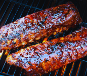

321 RIBS

Fernando Rodriguez

Upgrade your next cookout with our legendary 321 ribs. This simple, foolproof method removes all the guesswork from smoking ribs while delivering incredible, competition-level flavor.